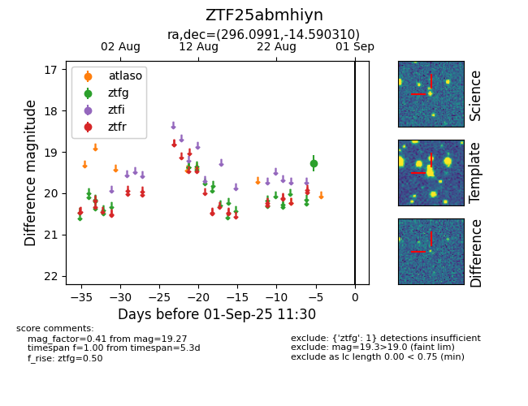

FINK: ZTF25abmhiyn
Lasair: ZTF25abmhiyn
ALeRCE: ZTF25abmhiyn
ZTF25abmhiyn (ztf,fink)
equatorial (ra, dec) = (296.0991,-14.59031)
galactic (l, b) = (25.4852,-18.18707)

last ztfg=19.27
1 ztfg detections